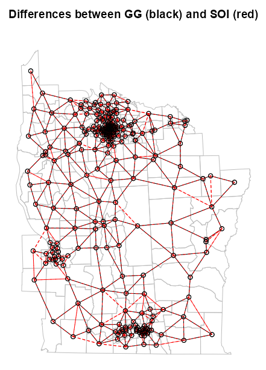
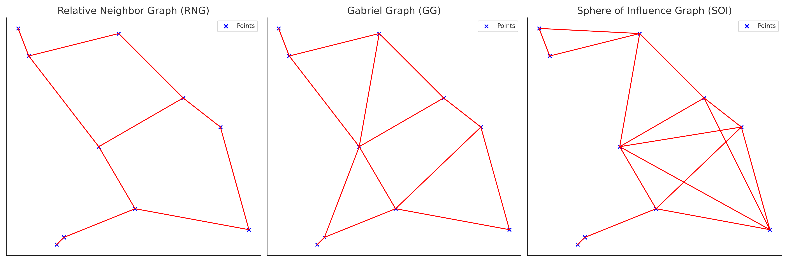

Spatial Weights
Misc
- Notes from {spdep} vignettes and its docs.
- Packages
- {spdep} - Spatial Dependence: Weighting Schemes, Statistics
- Workflows
- Possibly include plotting differences to compare neighbor algorithms to see which best aligns with analysis goals, and testing symmetry and disjointedness of the results. (See Diagnostics, Geospatial)
- Graph-based
- Create a points list object (e.g.
st_centroid) \(\rightarrow\) Fit neighbors algorithm (e.g.gabrielneigh) \(\rightarrow\) Convert to neighbors list (e.g.graph2nb) \(\rightarrow\) Add spatial weights (e.g.nb2listw)- Also see Geospatial, Preprocessing >> sf >> Points in Polygons
- Create a points list object (e.g.
- Distance-based
- Create a points list object (e.g.
st_centroid) \(\rightarrow\) If necessary, convert to geographical coordinates (viast_transform) \(\rightarrow\) Fit neighbors algorithm (e.g.knearneigh) \(\rightarrow\) Convert to neighbors list (e.g.knn2nb) \(\rightarrow\) Add spatial weights (e.g.nb2listw)- If you only have latitude and longitude columns, you need to convert to a sf object via
st_as_sfbefore creating a points list object (See Geospatial, Preprocessing >> Projections >> Geographic Coordinates) - The conversion to geographical coordinates isn’t necessary, but Great Circle distances are more accurate than planar distances.
- If you only have latitude and longitude columns, you need to convert to a sf object via
- Create a points list object (e.g.
- Polygon-based (aka Contiguity-based)
- Make sure you have sf object or list of SpatialPolygon objects \(\rightarrow\) Create neighbors list via
poly2nb\(\rightarrow\) Add spatial weights (e.g.nb2listw)
- Make sure you have sf object or list of SpatialPolygon objects \(\rightarrow\) Create neighbors list via
- Plot differences between neighbor algorithms
It can be difficult to compare algorithms, so this helps make the differences more discernable.
Example: From Example: SOI and GG
# diffnb doesn't handle directed graphs NY85_nb_gg <- graph2nb(gabrielneigh(coords = NY8_ct_sf), sym = TRUE) diffs <- diffnb(NY85_nb_soi, NY85_nb_gg) plot(st_geometry(NY8_sf), border = "gray", reset = FALSE, main = "Differences between GG (black) and SOI (red)") plot(NY85_nb_gg, coords = coords_ct, add = TRUE) plot(diffs, coords = coords_ct, add = TRUE, col = "red", lty = 2)- lty = 2 is for dashed lines, yet there are solid red lines in the plot. A solid line indicates a symmetrical link. It happens because dashed lines are drawn from i to j and j to i. This overlap sometimes creates a solid line. (source)
- Bivand said “sometimes,†so perhaps this isn’t a sure-fire representation of all the symmetric links.
- There appears to be black dashed lines overlapped with red dashed lines. The black dashed lines are just imperfections in the rendering of the solid black lines. Maybe it’s the angle that igraph or base R has trouble with, but anyways these instances should be interpreted as solid black lines.
- lty = 2 is for dashed lines, yet there are solid red lines in the plot. A solid line indicates a symmetrical link. It happens because dashed lines are drawn from i to j and j to i. This overlap sometimes creates a solid line. (source)
- The
all.equalfunction (docs, from {terra}) can be used to examine the differences in distance calculations - A graph of neighbors is not based on planar distances when some neighbor links cross each other.
{kind=link}
Neighbors Lists
- Just about everything gets converted to a neighbor list of some sort at the end (e.g. adding spatial weights, moran’s test, plotting)
editcan be used to interactively add links (e.g. not detected erroneously) or remove links (e.g. mountain range separates boundaries).- Types of Neighbor Lists
cell2nb- Takes regular, flat, square grids (via ncols, nrows) as inputs- type = rook (default)(shared edge) or queen (shared edge or vertex)
- torus = TRUE: The grid is mapped onto a torus, removing edge effects.
graph2nb- Takes a graph-based neighbor object- sym = FALSE says don’t add links to create symmetry
- No symmetry means if node A is a neighbor of node B, that doesn’t necessarily mean that node B is a neighbor of node A
- sym = TRUE will insert links to restore symmetry, but the graphs then no longer exactly fulfil their neighbour criteria.
- sym = FALSE says don’t add links to create symmetry
grid2nb- Takes GridTopology class object (?)- Maybe these are like H3 hexagonal grids
knn2nb- Takes a k-NN object- sym = FALSE says don’t add links to create symmetry
- No symmetry means if node A is a neighbor of node B, that doesn’t necessarily mean that node B is a neighbor of node A
- In the overwhelming majority of cases, k-NN leads to asymmetric neighbours
is.symmetric.nbcan be used to check for symmetry
- sym = FALSE says don’t add links to create symmetry
poly2nb- Takes a sf object with (multi-)polygons or a list of polygon objects with class SpatialPolygon- Builds a neighbours list based on regions with contiguous boundaries, that is sharing one or more boundary point.
- snap allows the shared boundary points to be a short distance from one another.
- e.g. A narrow body of water separates the boundaries where there’s a ferry or a bridge that could in essence make the boundaries contiguous.
- Sometimes there are geographical artefacts present which screw up the algorithm detecting continguous boundaries. By increasing the snap value, you can absorb the artefacts and detect the contiguous boundary between the shapes.
- There is also an
editfunction to interactively add missing neighbor links.
- There is also an
- Defaults
- For SpatialPolygons objects and sf objects with no coordinate reference system, it’s 1.490116e-08 whichs is
sqrt(.Machine$double.eps) - For sf objecst with coordinate reference systems, it’s 1e-7 (approx 10mm) that’s converted to units of the coordinate system.
- For SpatialPolygons objects and sf objects with no coordinate reference system, it’s 1.490116e-08 whichs is
- If queen = TRUE, then when three or more polygons meet at a single point, they all meet the contiguity condition, giving rise to crossed links.
- If queen = FALSE, (aka rook), at least two boundary points must be within the snap distance of each other
tri2nb- Takes a coordinates matrix (e.g. centroids) and is the input forsoi.graph
Spatial Weights
- A spatial weights matrix defines how closely related each pair of nodes are
nb2listwwill add spatial weights to your neighbors listnb2listwdist- Supplementsnb2listwwith additional options- Defaults: type = “idw”, alpha = 1, style = “raw†(i.e. no normalization)
- If both type and style are specified, I’d guess that normalization is applied to the weights and not the distances. (i.e. first type applied, then style)
- Types
- Inverse Distance Weighting (IDW)
\[w_{ij} = d_{ij}^{-\alpha}\]- IDW weights show extreme behaviour close to 0 and can take on the value infinity. In such cases, the infinite values are replaced by the largest finite weight present in the weights list.
- Double-Power Distance Weights
\[w_{ij} = e^{-\alpha \cdot d_{ij}}\] - Exponential Distance Decay
\[w_{ij} = \left[1 - \left(\frac{d_{ij}}{d_{\textrm{max}}}\right)^{\alpha}\right]^{\alpha}\]
- Inverse Distance Weighting (IDW)
- Normalization Styles
- Row-Standardized (W)
- Each row is standardized to sum to 1
- All the values describing a node’s relationship to each other node will sum to 1
- Each weight has had its raw value divided by the sum of the row.
- Most popular as it makes results comparable, i.e. one node’s set of relationships is comparable to another node’s set of relationships (rows)
- Best when the number of neighbors for each node can vary significantly.
- Example: Analyzing how house prices are influenced by neighboring houses in a suburban area. The number of neighboring houses isn’t what primarily influences a house’s value, it’s the local houses themeselves.
- Example: k-NN w/k=2
\[ \begin{array}{c|cccc} & A & B & C & D \\ \hline A & 0 & 0.66 & 0.34 & 0 \\ B & 0.50 & 0 & 0.50 & 0 \\ C & 0 & 0.61 & 0 & 0.39 \\ D & 0 & 0.28 & 0.72 & 0 \end{array} \]
- Each row is standardized to sum to 1
- Binary (B)
- Neighbor/Not Neighbor (1/0)
- Ignores strength of the link
- Example: Studying an invasive species. It only matters whether the species is able to or not able to invade another node.
- Globally Standardized (C)
- All cells in the matrix are standardized to sum to 1
- Accounts for global pattern
- Example: Investingating voting patterns in densely populated districts vs. sparsely populated districts in a state or region. Here you want the total influence to be standardized across the entire state or region.
- Unstandardized (U)
- Just uses raw weight values (e.g. distances)
- Good when actual distances matter and not the relative distances
- Preserves absolute differences
- Problematic if distances vary greatly
- Example: Modeling air pollution dispersion from industrial sites. It’s a physical phenomenon saw distances matter as pollution concentration could decay exponentiall with distance from the site.
- Variance-Stabilizing
- Each raw weight is divided by square root of row sums
- More robust to outliers or extreme values
- Example: Analyzing disease clusters in areas with very uneven population density. Variance stabilization helps prevent false positives in dense areas
- Min/Max
- Divides the weights by the minimum of the maximum row sums and maximum column sums of the input weights
- Similar to U and C styles
- Row-Standardized (W)
Neighbor Algorithms
- Graph-based
Misc
- No option to use Great Circle distances for geographical coordinates, only Euclidean distance (planar)
- All the graph-based neighbour schemes always ensure that all the points will have at least one neighbour.
Relative Neighbor Graph (RNG)
\[ d(x,y) \le \min\{\;\max\{d(x,z),d(y,z)\}\;|\; z \in S\;\} \]
- Neighbors are defined such that two points \(x\) and \(y\) are connected if the direct distance \(d(x,y)\) is less than or equal to the minimum of the maximum distances from \(x\) and \(y\) to any third point \(z \in S\)
- Does Not guarantee symmetry
Gabriel Graph (GG)
\[ d(x,y) \le \min\{(d(x,z)^2 + d(y,z)^2)^{1/2} \;|\;z \in S\} \]
- Neighbors \(x\) and \(y\) are connected if the distance \(d(x, y)\) is less than or equal to the square root of the summ of squared distances from \(x\) and \(y\) to any third point \(z \in S\)
- Does NOT guarantee symmetry
Sphere of Influence Graph (SOI)
- For a point set \(S\), \(x\) and \(y\) are connected if their respective “spheres of influence†(circles centered at \(x\) and \(y\) with radii equal to the distance to their nearest neighbors) intersect in at least two places
- Guarantees symmetry
Hierarchical Relationship: RNG \(\subseteq\) GG \(\subseteq\) SOI
- All the links made by RNG will be made by GG, and all the links made by GG will be made by SOI
- RNG is the most restrictive while SOI is the least.
Example: SOI and GG (source)
library(spdep) NY8_sf <- st_read(system.file( "shapes/NY8_bna_utm18.gpkg", package = "spData"), quiet = TRUE) # validate geometries table(st_is_valid(NY8_sf)) #> TRUE #> 281 dplyr::glimpse(NY8_sf) #> Rows: 281 #> Columns: 13 #> $ AREAKEY <chr> "36007000100", "36007000200", "36007000300", "36007000400", "3600700… #> $ AREANAME <chr> "Binghamton city", "Binghamton city", "Binghamton city", "Binghamton… #> $ X <dbl> 4.069397, 4.639371, 5.709063, 7.613831, 7.315968, 8.558753, 9.206733… #> $ Y <dbl> -67.3533, -66.8619, -66.9775, -65.9958, -67.3183, -66.9344, -67.1789… #> $ POP8 <dbl> 3540, 3560, 3739, 2784, 2571, 2729, 3952, 993, 1908, 948, 1172, 1047… #> $ TRACTCAS <dbl> 3.08, 4.08, 1.09, 1.07, 3.06, 1.06, 2.09, 0.02, 2.04, 0.02, 1.03, 3.… #> $ PROPCAS <dbl> 0.000870, 0.001146, 0.000292, 0.000384, 0.001190, 0.000388, 0.000529… #> $ PCTOWNHOME <dbl> 0.32773109, 0.42682927, 0.33773959, 0.46160483, 0.19243697, 0.365178… #> $ PCTAGE65P <dbl> 0.14661017, 0.23511236, 0.13800481, 0.11889368, 0.14157915, 0.141077… #> $ Z <dbl> 0.14197, 0.35555, -0.58165, -0.29634, 0.45689, -0.28123, -0.24605, 0… #> $ AVGIDIST <dbl> 0.2373852, 0.2087413, 0.1708548, 0.1406045, 0.1577753, 0.1726033, 0.… #> $ PEXPOSURE <dbl> 3.167099, 3.038511, 2.838229, 2.643366, 2.758587, 2.848411, 2.951257… #> $ geom <MULTIPOLYGON [m]> MULTIPOLYGON (((421808.5 46..., MULTIPOLYGON (((421794.… # calculate centroids in counties that will be nodes NY8_ct_sf <- st_centroid(st_geometry(NY8_sf), of_largest_polygon = TRUE) class(NY8_ct_sf) #> [1] "sfc_POINT" "sfc" coords_ct <- st_coordinates(NY8_ct_sf) class(coords_ct) #> [1] "matrix" "array"# convert point list to neighbor list NY84_nb <- tri2nb(coords = NY8_ct_sf) # fit the soi graph and convert graph obj to a neighbor list NY85_nb_soi <- graph2nb(soi.graph(tri.nb = NY84_nb, coords = NY8_ct_sf)) summary(NY85_nb_soi) #> Neighbour list object: #> Number of regions: 281 #> Number of nonzero links: 1238 #> Percentage nonzero weights: 1.567863 #> Average number of links: 4.405694 #> 2 disjoint connected subgraphs #> Link number distribution: #> #> 1 2 3 4 5 6 7 8 #> 4 29 45 64 70 49 19 1 #> 4 least connected regions: #> 228 231 246 247 with 1 link #> 1 most connected region: #> 133 with 8 links NY85_nb_gg <- graph2nb(gabrielneigh(coords = NY8_ct_sf)) summary(NY85_nb_gg) #> Neighbour list object: #> Number of regions: 281 #> Number of nonzero links: 592 #> Percentage nonzero weights: 0.7497372 #> Average number of links: 2.106762 #> 20 regions with no links: #> 35, 51, 55, 67, 78, 82, 109, 190, 210, 212, 219, 234, 235, 241, 243, 251, 277, 278, 279, 281 #> Non-symmetric neighbours list #> Link number distribution: #> #> 0 1 2 3 4 5 #> 20 68 105 48 30 10 #> 68 least connected regions: #> 10 16 18 27 30 31 32 33 34 45 46 48 49 50 56 64 66 73 77 81 89 90 91 94 100 104 107 108 123 146 149 153 160 161 164 167 168 179 189 194 202 209 214 215 220 222 223 231 232 240 242 246 247 248 249 250 255 256 257 258 260 262 263 271 272 275 276 280 with 1 link #> 10 most connected regions: #> 37 41 58 63 70 102 112 114 184 239 with 5 links- There are two neighbor list conversions:
tri2nbreturns a special list required as input forsoi.graph. Also, I think {dbscan} is required to be installed forsoi.graphbut maybe not the others.graph2nbconverts a graph object to a neighbor list that’s used for graphing the network
- The RNG method (
relativeneigh) is fit the same way as the GG method.
par(mfrow = c(1, 2)) plot(st_geometry(NY8_sf), border = "gray") plot(NY85_nb_soi, coords = coords_ct, add = TRUE) title(main = "Sphere of Influence") # plot boundaries plot(st_geometry(NY8_sf), border = "gray") # plot edges and nodes plot(NY85_nb_gg, coords = coords_ct, add = TRUE) title(main = "Gabriel Graph")- I thought the difference would be more apparent between the two methods, but they’re pretty similar.
- I feel the GG graph is more connected overall, but the SOI is more connected in areas where the nodes are denser.
- There are two neighbor list conversions:
- k-NN
Does NOT guarantee symmetry (almost always asymmetric)
-
NY88_nb_sf <- knn2nb(knearneigh(NY8_ct_sf, k = 4)) # plot boundaries plot(st_geometry(NY8_sf), border="gray") # plot edges and nodes plot(NY88_nb_sf, coords = coords_ct, add = TRUE) title(main="K nearest neighbours, k = 4")See Graph-based >> Example for code for NY8_sf, NY8_ct_sf, and coords_ct
- Where NY8_ct_sf is a point list of county centroids and coords_ct is the same thing but in a point matrix
knn2nbcoverts the knn graph object to a neighbor list for graphingIf longlat = TRUE, Great Circle distances in kilometers are used (See DIstance Neighbors >> Example 2)
# Convert to geographic coordinates NY8_ct_ll <- st_transform(NY8_ct_sf, 4326) st_is_longlat(NY8_ct_ll) #> [1] TRUEFor larger datasets, changing the engine to S2 (spatial indexing) along with the coordinates being geographical, spherical distances are calculated which can be an acceptable compromise between accuracy and speed
sf_use_s2(TRUE) pts_ll1_nb <- knn2nb(knearneigh(NY8_ct_ll, k = 4))
- Distance Neighbors
Identifies neighbors within a euclidean (default) distance range using a k-NN graph
- So, larger the upper threshold, then more links will be made.
- This fraction could correspond to a “reasonable†walking or driving distance if you’re studying neighborhood effects.
-
dsts <- unlist(nbdists(nb = NY88_nb_sf, coords = NY8_ct_sf)) max_1nn <- max(dsts) max_1nn #> [1] 26564.68 NY810_nb <- dnearneigh(NY8_ct_sf, d1 = 0, d2 = 0.45 * max_1nn) # plot boundaries plot(st_geometry(NY8_sf), border="grey", reset=FALSE, main = paste0("Distance based neighbours 0 to ", format(0.45 * max_1nn), " m") ) # plot edges and nodes plot(NY810_nb, coords_ct, add = TRUE)nbdistsreturns the Euclidean distances along the links of k-NN graph- Where NY88_nb_sf is the neighbor list of the k-NN graph object (see k-NN example) and NY8_ct_sf and coords_ct are the point list and point matrix of county centroids respectively (see Graph-based example)
- The max of these distances is 26,564.68 meters or 26.6 km
- The 75th percentile of the max of those distances is used as the upper threshold for the distance neighbors algorithm.
- If longlat = TRUE, then Great Circle distance in kilometers is used (See Example 2)
- If x is an “sf†object, coordinates are geographical, and use_s2 = TRUE (spatial indexing), spherical distances in kilometers are used.
- See this vignette section for a discussion on this setting and dwithin
sf_use_s2(TRUE)might also need to be set
Example 2: Geographical Distances
ny_sf <- st_read(system.file( "shapes/NY8_bna_utm18.gpkg", package = "spData"), quiet = TRUE) ny_sf_ll <- st_transform(ny_sf, 4326) dplyr::glimpse(ny_sf_ll) #> Rows: 281 #> Columns: 13 #> $ AREAKEY <chr> "36007000100", "36007000200", "36007000300", "36007000400", "36007000500", "… #> $ AREANAME <chr> "Binghamton city", "Binghamton city", "Binghamton city", "Binghamton city", … #> $ X <dbl> 4.069397, 4.639371, 5.709063, 7.613831, 7.315968, 8.558753, 9.206733, 10.180… #> $ Y <dbl> -67.3533, -66.8619, -66.9775, -65.9958, -67.3183, -66.9344, -67.1789, -66.87… #> $ POP8 <dbl> 3540, 3560, 3739, 2784, 2571, 2729, 3952, 993, 1908, 948, 1172, 1047, 3138, … #> $ TRACTCAS <dbl> 3.08, 4.08, 1.09, 1.07, 3.06, 1.06, 2.09, 0.02, 2.04, 0.02, 1.03, 3.02, 5.07… #> $ PROPCAS <dbl> 0.000870, 0.001146, 0.000292, 0.000384, 0.001190, 0.000388, 0.000529, 0.0000… #> $ PCTOWNHOME <dbl> 0.32773109, 0.42682927, 0.33773959, 0.46160483, 0.19243697, 0.36517857, 0.66… #> $ PCTAGE65P <dbl> 0.14661017, 0.23511236, 0.13800481, 0.11889368, 0.14157915, 0.14107732, 0.23… #> $ Z <dbl> 0.14197, 0.35555, -0.58165, -0.29634, 0.45689, -0.28123, -0.24605, 0.02683, … #> $ AVGIDIST <dbl> 0.2373852, 0.2087413, 0.1708548, 0.1406045, 0.1577753, 0.1726033, 0.1912999,… #> $ PEXPOSURE <dbl> 3.167099, 3.038511, 2.838229, 2.643366, 2.758587, 2.848411, 2.951257, 2.9833… #> $ geom <MULTIPOLYGON [°]> MULTIPOLYGON (((-75.9458 42..., MULTIPOLYGON (((-75.946 42....,… # calculate centroids in counties that will be nodes ny_ct_ll <- st_centroid(st_geometry(ny_sf_ll), of_largest_polygon = TRUE) st_is_longlat(ny_ct_ll) #> [1] TRUE # matrix format needed for plots coords_ct_ll <- st_coordinates(ny_ct_ll)- Since we’re using geographical coordinates in our distance and centroid calcuations our boundaries have to be in the same coordinate system when plotting
- If we weren’t worried about plotting, then
st_tranformcould’ve been used on the centroids object instead of the dataframe.
# knn w/longlat = TRUE ny_nb_ll <- knn2nb(knearneigh(ny_ct_ll, k = 4, longlat = TRUE)) summary(ny_nb_ll) #> Neighbour list object: #> Number of regions: 281 #> Number of nonzero links: 1124 #> Percentage nonzero weights: 1.423488 #> Average number of links: 4 #> Non-symmetric neighbours list #> Link number distribution: #> #> 4 #> 281 #> 281 least connected regions: #> 1 2 3 4 5 6 7 8 9 10 11 12 13 14 15 16 17 18 19 20 21 22 23 24 25 26 27 28 29 30 31 32 33 34 35 36 37 38 39 40 41 42 43 44 45 46 47 48 49 50 51 52 53 54 55 56 57 58 59 60 61 62 63 64 65 66 67 68 69 70 71 72 73 74 75 76 77 78 79 80 81 82 83 84 85 86 87 88 89 90 91 92 93 94 95 96 97 98 99 100 101 102 103 104 105 106 107 108 109 110 111 112 113 114 115 116 117 118 119 120 121 122 123 124 125 126 127 128 129 130 131 132 133 134 135 136 137 138 139 140 141 142 143 144 145 146 147 148 149 150 151 152 153 154 155 156 157 158 159 160 161 162 163 164 165 166 167 168 169 170 171 172 173 174 175 176 177 178 179 180 181 182 183 184 185 186 187 188 189 190 191 192 193 194 195 196 197 198 199 200 201 202 203 204 205 206 207 208 209 210 211 212 213 214 215 216 217 218 219 220 221 222 223 224 225 226 227 228 229 230 231 232 233 234 235 236 237 238 239 240 241 242 243 244 245 246 247 248 249 250 251 252 253 254 255 256 257 258 259 260 261 262 263 264 265 266 267 268 269 270 271 272 273 274 275 276 277 278 279 280 281 with 4 links #> 281 most connected regions: #> 1 2 3 4 5 6 7 8 9 10 11 12 13 14 15 16 17 18 19 20 21 22 23 24 25 26 27 28 29 30 31 32 33 34 35 36 37 38 39 40 41 42 43 44 45 46 47 48 49 50 51 52 53 54 55 56 57 58 59 60 61 62 63 64 65 66 67 68 69 70 71 72 73 74 75 76 77 78 79 80 81 82 83 84 85 86 87 88 89 90 91 92 93 94 95 96 97 98 99 100 101 102 103 104 105 106 107 108 109 110 111 112 113 114 115 116 117 118 119 120 121 122 123 124 125 126 127 128 129 130 131 132 133 134 135 136 137 138 139 140 141 142 143 144 145 146 147 148 149 150 151 152 153 154 155 156 157 158 159 160 161 162 163 164 165 166 167 168 169 170 171 172 173 174 175 176 177 178 179 180 181 182 183 184 185 186 187 188 189 190 191 192 193 194 195 196 197 198 199 200 201 202 203 204 205 206 207 208 209 210 211 212 213 214 215 216 217 218 219 220 221 222 223 224 225 226 227 228 229 230 231 232 233 234 235 236 237 238 239 240 241 242 243 244 245 246 247 248 249 250 251 252 253 254 255 256 257 258 259 260 261 262 263 264 265 266 267 268 269 270 271 272 273 274 275 276 277 278 279 280 281 with 4 links # Get maximum neighbor distance dsts_ll <- unlist(nbdists(nb = ny_nb_ll, coords = ny_ct_ll)) max_1nn <- max(dsts_ll) max_1nn #> [1] 32.04742 # neighbors within range ny_dn_ll <- dnearneigh(ny_ct_ll, d1 = 0, d2 = 0.005 * max_1nn, longlat = TRUE) summary(ny_dn_ll) #> Neighbour list object: #> Number of regions: 281 #> Number of nonzero links: 16078 #> Percentage nonzero weights: 20.36195 #> Average number of links: 57.21708 #> 1 region with no links: #> 30 #> 2 disjoint connected subgraphs #> Link number distribution: #> #> 0 1 2 3 4 5 6 7 8 9 10 11 13 14 15 16 18 19 20 21 23 24 25 27 28 29 30 31 32 33 34 35 37 38 39 40 41 42 43 44 45 46 48 49 50 51 59 63 65 66 67 #> 1 5 5 10 9 6 5 7 5 9 7 1 5 3 3 2 5 5 7 4 1 1 1 1 2 1 1 1 1 2 3 1 1 3 1 3 8 4 3 1 7 7 1 1 1 1 1 1 2 1 2 #> 74 77 79 80 82 87 88 89 94 96 97 98 100 101 102 104 105 106 107 108 109 110 111 112 113 114 115 116 117 118 119 #> 1 1 1 1 1 1 1 1 1 1 1 1 1 1 1 1 1 1 3 2 5 4 8 10 5 17 14 9 7 8 2 #> 5 least connected regions: #> 56 75 106 109 258 with 1 link #> 2 most connected regions: #> 112 122 with 119 links- longlat = TRUE was set in both
knearneighanddnearneigh
# boundaries plot(st_geometry(ny_sf_ll), border="grey", reset = FALSE, main = paste0("Distance based neighbours 0 to ", format(round(0.005 * max_1nn, 2)), " km")) # nodes and edges plot(ny_dn_ll, coords_ct_ll, add = TRUE)- Notice the distance is in kilometers and not meters
{kind=link}
{kind=link}
{kind=link}
{kind=link}
{kind=link}
Diagnostics
Connectedness
See Example 1 below for a visual explainer about these terms
Orders or Spatial Lags are the number of steps away from a node.
- Using the analogy of a social network
- First-order neighbors (lag 1) are your direct friends
- Second-order neighbors (lag 2) are friends of your friends (but not your direct friends)
- Third-order neighbors (lag 3) are friends of friends of friends (but not including any previous connections)
- Using the analogy of a social network
Tracts are the number of links that can be traversed at a certain order (i.e. number of steps away from a particular node)
- This is like The Garden of Forking Paths in Statistical Rethinking where rings are orders and paths are tracts. (See Statistical Rethinking, Chapter 2 >> Counting the Ways)
The order at which connectedness peaks could provide insight on a couple things.
- It could indicate a characteristic scale of clustering in your datam spatial units (locations) are arranged in a way that maximizes connections at this many orders away.
- It might reflect the underlying geography - maybe the typical “width†of clusters
- At what distance spatial autocorrelation might peak
Example 1: Orders and Tracts Visually
pacman::p_load( spdep, purrr ) ny_sf <- st_read(system.file( "shapes/NY8_bna_utm18.gpkg", package = "spData"), quiet = TRUE) NY_nb <- read.gal(system.file("weights/NY_nb.gal", package="spData"), region.id=as.character(as.integer(row.names(ny_sf))-1L)) sy_sf <- ny_sf[!is.na(ny_sf$AREANAME) & ny_sf$AREANAME == "Syracuse city",] Sy0_nb <- subset(NY_nb, !is.na(ny_sf$AREANAME) & ny_sf$AREANAME == "Syracuse city") lags <- 9 sy_coords <- st_geometry(sy_sf) |> st_centroid() |> st_coordinates() syr_nb_ords <- nblag(Sy0_nb, maxlag = lags) my_orders <- c(1, 2, 3, 7, 8) nb_ords_sub <- syr_nb_ords[my_orders]- Thoughts
plot_order <- function(nb_ord, ord) { plot(st_geometry(sy_sf), border = "gray") plot(nb_ord, sy_coords, add = TRUE) title(paste("Order", ord)) } par(mfrow = c(2, 3)) walk2( nb_ords_sub, my_orders, plot_order )- Thoughts
pick_node <- function(item, item_id) { if (item_id != 28) { item <- 0 } return(item) } filter_node <- function(inner_list) { num_items <- length(inner_list) filtered_list <- map2(inner_list, 1:num_items, pick_node ) } syr_nb_node <- map(syr_nb_ords, filter_node) nb_node_ords_sub <- syr_nb_node[my_orders] walk2( nb_node_ords_sub, my_orders, plot_order )- Thoughts
Example 2: Analyze via Heatmap and Table
The data is a neighbor list of Syracuse, NY with spatial weights. The Polygon-based neighbor algorithm is used.
Spatial weights are not necessary for computing lags — only neighbors.
pacman::p_load( spdep, # nb list manipulation dplyr, # data manipulation tidyplots # heatmap tinytable # table ) ny_sf <- st_read(system.file( "shapes/NY8_bna_utm18.gpkg", package = "spData"), quiet = TRUE) NY_nb <- read.gal(system.file("weights/NY_nb.gal", package="spData"), region.id=as.character(as.integer(row.names(ny_sf))-1L)) Sy0_nb <- subset(NY_nb, !is.na(ny_sf$AREANAME) & ny_sf$AREANAME == "Syracuse city")lags <- 9 lags_txt <- nombre::ordinal(1:lags, cardinal = TRUE) |> stringr::str_to_title() # doesn't require weights, just neighbors syr_nb_lags <- nblag(Sy0_nb, maxlag = lags) clean_nb <- function(nb_list, orders) { # stops messages, but will need to subset results q_as_tibble <- purrr::quietly(as_tibble) nb_list |> card() |> # get tracts table() |> # tally tracts # create tibble quietly q_as_tibble(.name_repair = "unique") |> # subsetting hack for base pipe (\(x) x[["result"]])() |> mutate(order = orders) } dat_nb <- purrr::map2( syr_nb_lags, lags_txt, clean_nb ) |> purrr::list_rbind() |> rename("num_tracts" = `...1`, "tot_nodes" = "n") |> mutate(num_tracts = as.integer(num_tracts), order = factor(order, ordered = TRUE, levels = rev(lags_txt))) |> filter(num_tracts != 0) |> # make sure each order category has full range of num_tracts tidyr::complete(order, num_tracts = 1:max(num_tracts), fill = list(tot_nodes = 0)) |> relocate(order, .before = "num_tracts")- Thoughts
dat_nb |> tidyplot(x = num_tracts, y = order, color = tot_nodes, width = 125, height = 125) |> add_heatmap(rotate_labels = 0) |> adjust_colors(colors_continuous_cividis) |> adjust_legend_title("Total Nodes") |> adjust_y_axis(title = "Order") |> adjust_x_axis(title = "Number of Tracts", position = "top") + theme_notebook()- Thoughts
# Transform data into a matrix-style format dat_nb_wide <- dat_nb |> arrange(desc(order)) |> tidyr::pivot_wider(names_from = num_tracts, values_from = tot_nodes, values_fill = 0) tt(dat_nb_wide) |> style_tt(background = "#FFFDF9FF") |> style_tt(j = 1, bold = TRUE) |> style_tt(i = dat_nb_wide > 0, background = "#0095A8FF", color = "white")- Thoughts
Disjointedness
These are groups of points that are connected to each other but completely separated from other groups
Think of islands in an archipelago:
- Points within each island are connected
- But there are no connections between islands
- Each island is a “component†or disjoint subgraph
Could indicate alternative clustering schemes in mixed effects models
Issues
- Disjoint components can break an assumption of connectivity between observations (aka spatial continuity)
- Block diagonal spatial weight matrices can affect computation of certain models
- Might need to analyze each block separately
spdep::n.comp.nbgives the number of disjoint connected subgraphs
{kind=link}
{kind=link}
{kind=link}